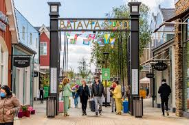
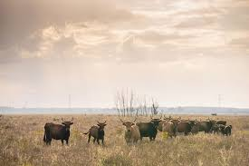

Feitjes over mijn woonplaats
- De gemeente Lelystad werd bij wet ingesteld op 1 januari 1980
- Lelystad is groen
- Met 765 vierkante kilometer is Lelystad de één-na-grootste gemeente van Nederland
- Lelystad heeft een station waar nooit een trein stopt
- Lelystad Airport begon in 1973 als Luchthaven Lelystad
Bataviastad
Batavia Stad Fashion Outlet is de eerste fashion 'outlet' in Nederland, gelegen aan het Markermeer in Lelystad. De outlet is genoemd naar het schip de Batavia uit 1628, waarvan een replica nabij is afgemeerd, bij de Bataviawerf.
Oostvaardersplassen
De Oostvaardersplassen vormen een natuurgebied van zo'n 5600 ha tussen Almere en Lelystad in de Nederlandse provincie Flevoland. Het gebied is ontstaan na de drooglegging van de Flevopolders en dus relatief jong.
